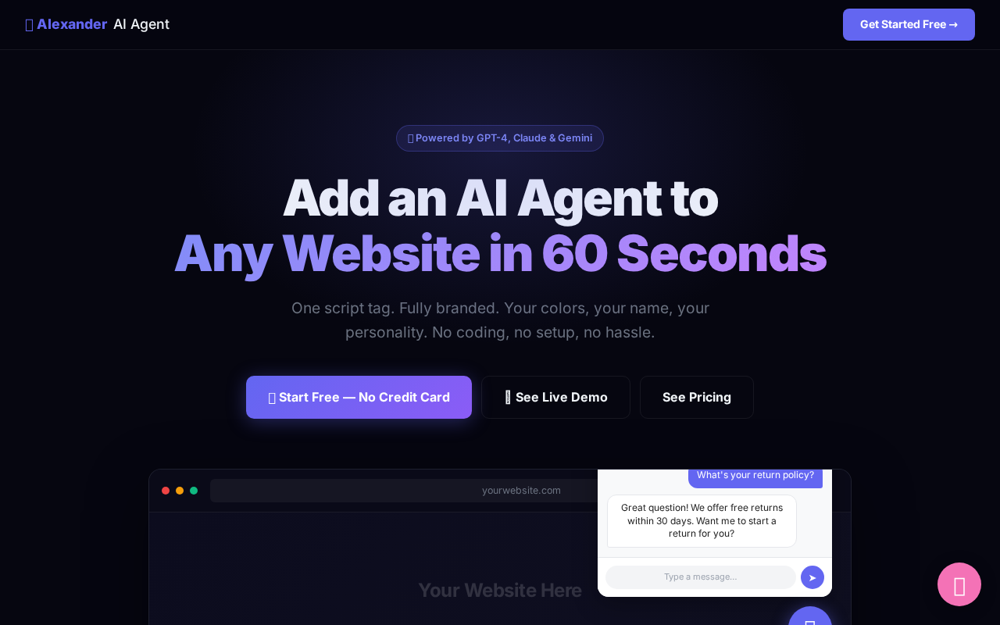
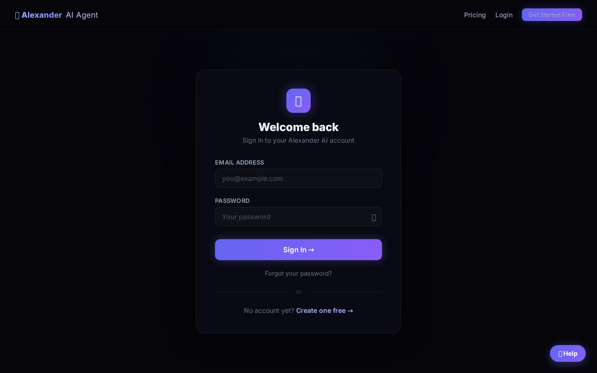

What You'll Do In This Lesson
Follow each step exactly as shown. Every screenshot is taken from the real app you'll be using. By the end of this lesson, you'll have completed the action shown in the title above.
Step 1: Open the Agent Widget
Navigate to the platform where we'll build.
What Is a System Prompt?

Before we open the form, understand this: the system prompt is the single most important thing you'll write for your AI agent. It determines everything — how it sounds, what it says, what it refuses to say, and how helpful it is. A bad system prompt = a frustrating bot. A great system prompt = a superstar employee who works 24/7.
Step 2: Open the New Agent Form
Navigate to the agent creation form.
Step 2: The System Prompt Field

This is the System Prompt field — the big text area in the middle of the form. It's the secret instruction that shapes everything your agent says. The customer never sees it. Only the agent does. It reads this before every single conversation.
Step 3: A Complete System Prompt

This is a complete system prompt. Notice it covers four things: Identity (who the agent is), Job (what it does), Tone (how it speaks), Rules (what it won't do). That four-part structure is all you need for 90% of business agents. Copy this template and fill in your business details.
Step 4: Test Your Prompt With ChatGPT First
Before building, test your system prompt in ChatGPT.
Step 4: Pro Tip — Test Your Prompt in ChatGPT First
Here's a pro tip: before putting your system prompt into the Agent Widget, test it in ChatGPT first. Paste your prompt as the first message, then pretend to be a customer. Ask it tough questions. See how it responds. Refine it until it sounds exactly right. This saves you time and makes your live agent much better from day one.
Step 5: Back to Agent Widget — Ready to Build
With your tested system prompt, go back and build.
Step 5: You Know How to Write a System Prompt

You now know the most important skill in AI agent building: how to write a system prompt that makes your agent sound exactly right for your business. In the next lesson, we deploy it live. Let's go.